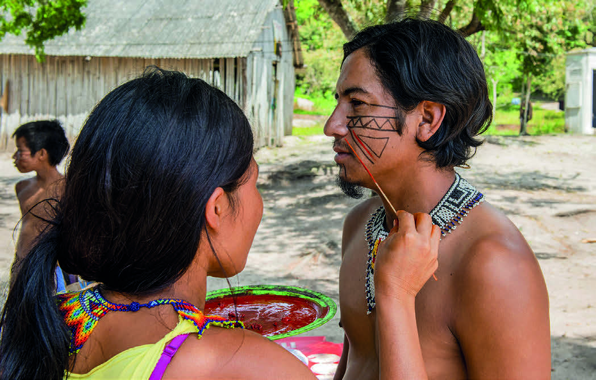
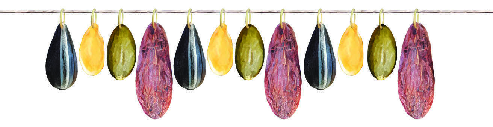
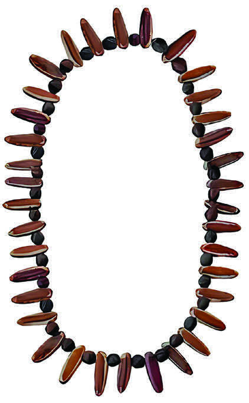
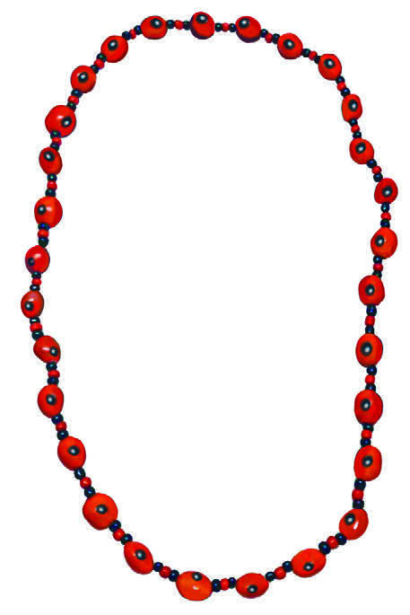

Nas atividades 1, 2 e 3 destaca-se a capacidade de observação, análise e identificação de padrões e regularidades, habilidades essenciais para o processo de alfabetização matemática.
Com base na análise dos colares indígenas, os estudantes serão desafiados a perceber os padrões de organização das sementes, seja na disposição de cores, tamanhos, formas ou sequências repetidas, e a criar seus próprios padrões expressando-se por meio de desenho.
Estimule os estudantes a compartilhar suas ideias para criação de colares com padrões e regularidades específicas.
CHICO FERREIRA/PULSAR IMAGENS

▲ INDÍGENAS DO POVO GUARANI MBYÁ FAZENDO PINTURA CORPORAL.
MUNICÍPIO DE MARICÁ, RIO DE JANEIRO, FOTOGRAFIA DE 2021.
OS PADRÕES CONTÊM MENSAGENS, SIMBOLOGIAS E ESPECIFICIDADES DE CADA ETNIA.
É POSSÍVEL OBSERVAR ALGUNS DELES TAMBÉM EM INSTRUMENTOS MUSICAIS, COMO O PAU DE CHUVA.
OBSERVE A FOTOGRAFIA A SEGUIR, QUE MOSTRA OS PADRÕES NA PINTURA CORPORAL.
PADRÕES PODEM SER DESCRITOS COMO SEQUÊNCIAS LÓGICAS QUE SE REPETEM DA MESMA MANEIRA.
COMO VOCÊ DESCREVERIA A ORDEM DESTAS SEMENTES?
A sequência é: semente azul-escura, semente redonda amarelada, semente marrom-claro, semente grande rosa.

◄ REPRESENTAÇÃO ARTÍSTICA DE UM COLAR INDÍGENA.
IMAGEM SEM ESCALA; CORES-FANTASIA.
PRATICANDO
1)
OBSERVE ALGUNS COLARES FEITOS COM SEMENTES E IDENTIFIQUE O PADRÃO DE REGULARIDADE COM QUE CADA UM DELES FOI CONSTRUÍDO.
1º colar: semente redonda e semente comprida; 2º colar: sementes preta pequena e semente vermelha.

◄ REPRESENTAÇÃO ARTÍSTICA DE UM COLAR INDÍGENA.
IMAGEM SEM ESCALA; CORES-FANTASIA.

◄ REPRESENTAÇÃO ARTÍSTICA DE UM COLAR INDÍGENA.
IMAGEM SEM ESCALA; CORES-FANTASIA.
Aproveite o momento para trabalhar o TCT Multiculturalismo: Diversidade cultural e Educação para valorização do multiculturalismo nas matrizes históricas e culturais brasileiras.
Por meio de uma roda de conversa com os estudantes, promova uma reflexão coletiva sobre a importância de reconhecer e valorizar as diferentes formas de expressão cultural, destacando a relação entre geometria e cultura indígena.
Estimule os estudantes a expressar seus conhecimentos sobre geometria e cultura indígena.
Nesse processo, é importante não apenas estimular o reconhecimento de formas geométricas, mas também promover o respeito e a valorização da diversidade cultural, proporcionando uma experiência educativa significativa e contextualizada.